Un pequeño negocio de tablas de picar en madera dura, diseñadas, hechas y vendidas directamente por mí, que pasó de ser un proyecto personal único a producción real.
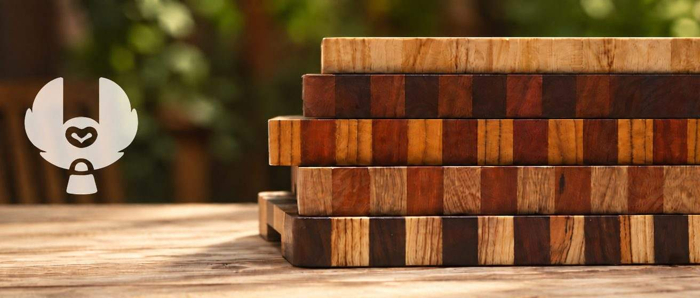
Búho GT empezó como algo que hice para mí mismo, una tabla de picar cortada y terminada en el taller de la universidad, sin ningún plan de negocio detrás. La gente que la veía empezó a preguntarme si les podía hacer una también, y cuando ya me lo habían pedido suficientes personas, empecé a venderlas.
La mayor parte pasó de boca en boca. Nos presentamos en algunos mercados locales, que fue donde mucha gente vio las tablas por primera vez en persona, y lo llevamos junto con una página de Instagram y Facebook. Algunas tiendas locales tuvieron unas cuantas en consignación y vendieron algunas por ahí también.
Antes de decidirme por un diseño, investigué distintas formas de acomodar la madera y terminé eligiendo el grano final, la misma construcción que usan las tablas de picar profesionales: las fibras quedan hacia arriba en vez de correr a lo largo de la superficie, así que el cuchillo corta entre ellas en vez de atravesarlas, lo cual es más suave tanto para la hoja como para la tabla. El grano final también hace que la madera luzca mejor: el patrón y el color de cada especie se ven más claros que en una superficie de grano plano, lo cual importaba porque parte de la idea era mostrar las maderas duras guatemaltecas.
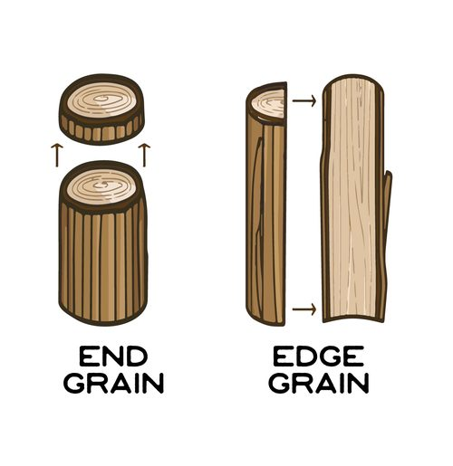
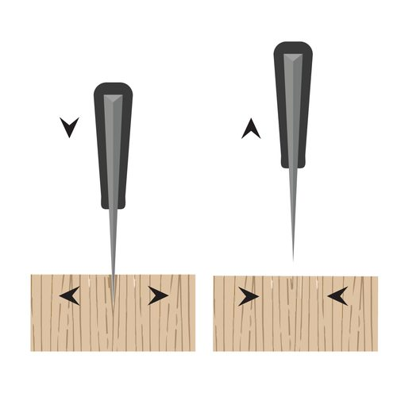
El producto original era una tabla de picar de verdad, de madera dura, construida y terminada con mucha atención al grano. Después agregué un segundo producto más sencillo, una tabla de quesos básica que se saltaba el trabajo técnico de combinar los granos, hecha solo para verse bien, a un precio más bajo. Tener dos niveles significaba que la gente podía comprar según lo que quisiera gastar.
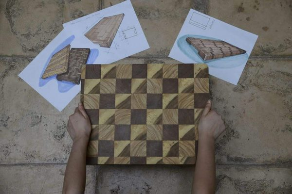
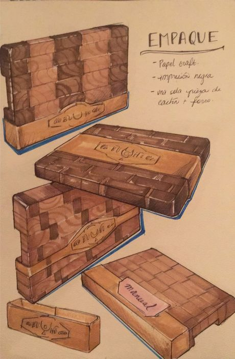
Cada tabla usa maderas duras guatemaltecas reales, e investigué las especies lo suficiente como para diseñar un set de postales para ellas, una por especie: una ilustración botánica de estilo científico en el frente, la madera terminada y trabajada en el reverso. Hacé clic en una tarjeta para voltearla.
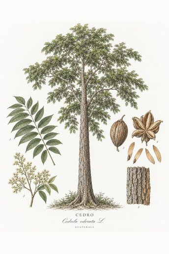
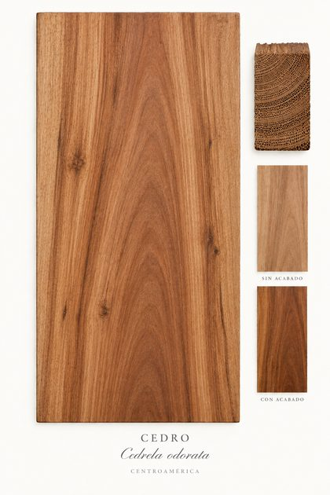
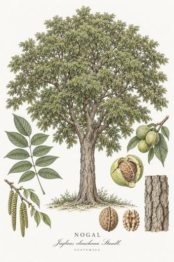
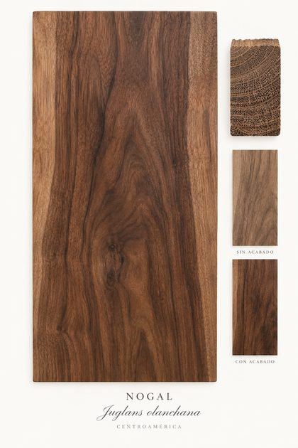
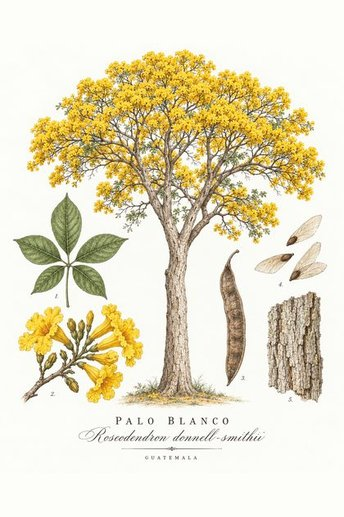
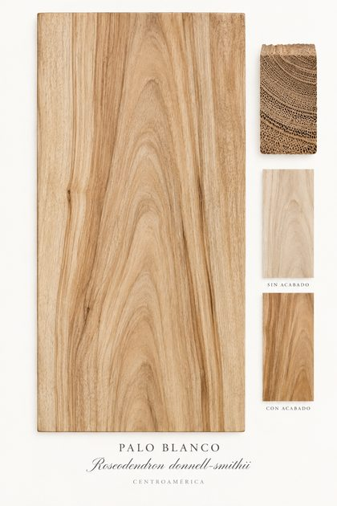
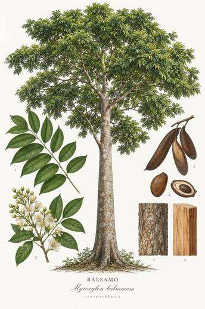
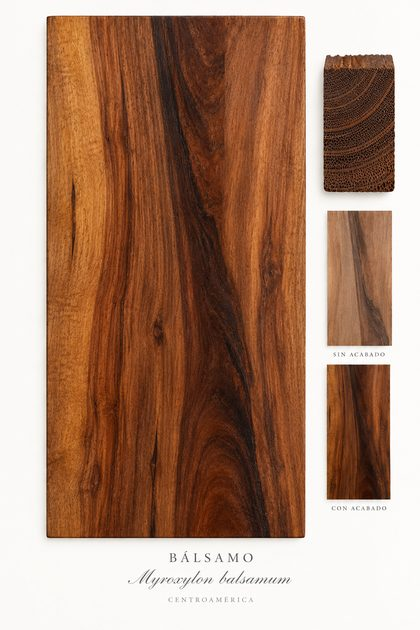
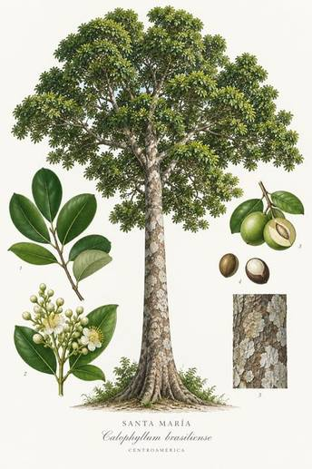
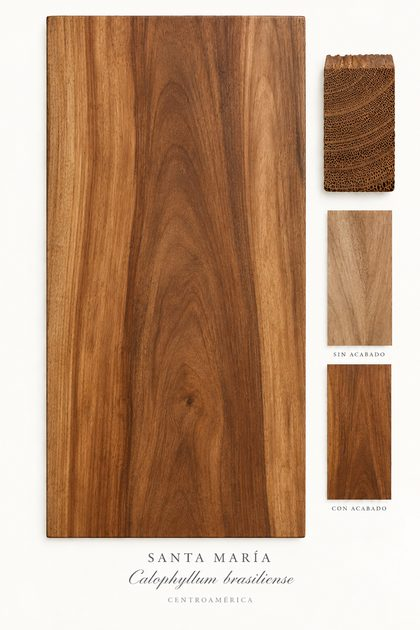
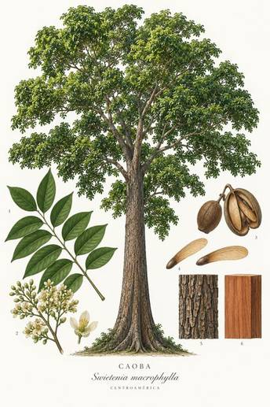
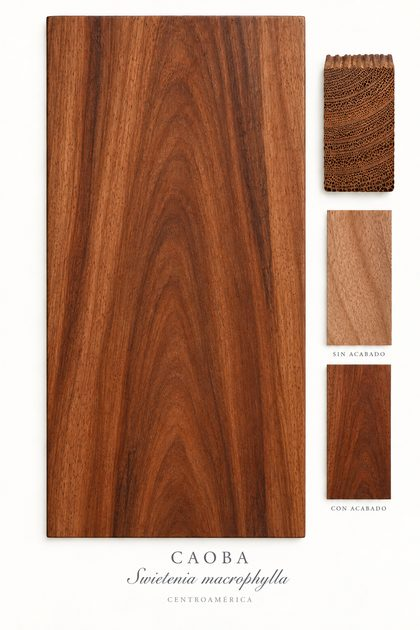
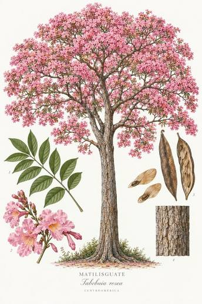
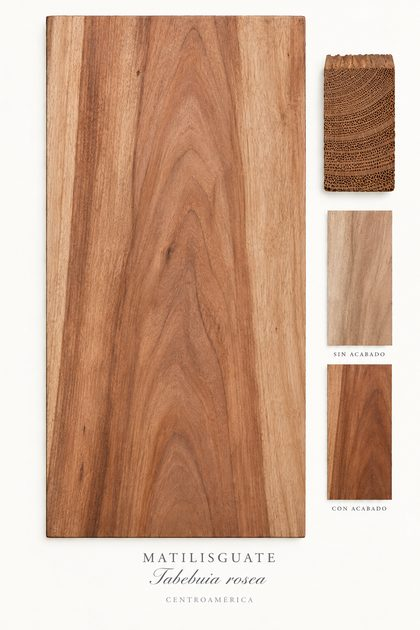
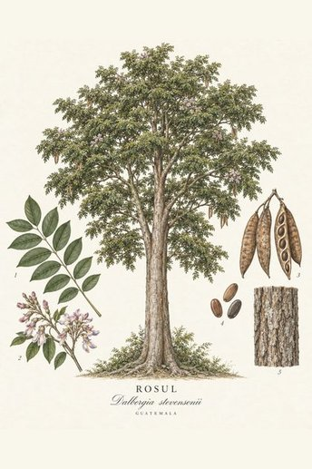
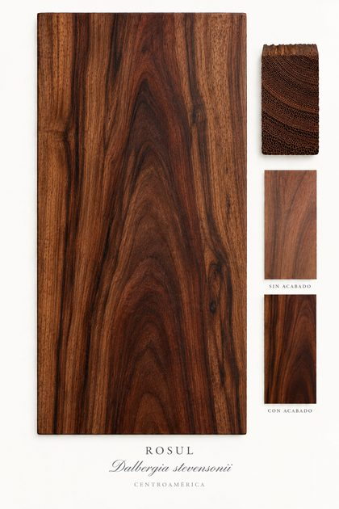
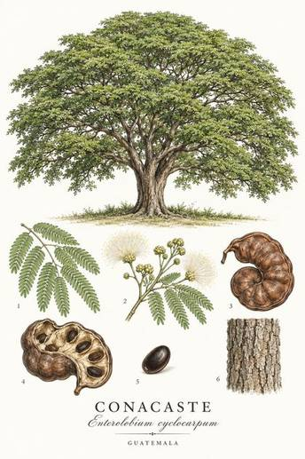
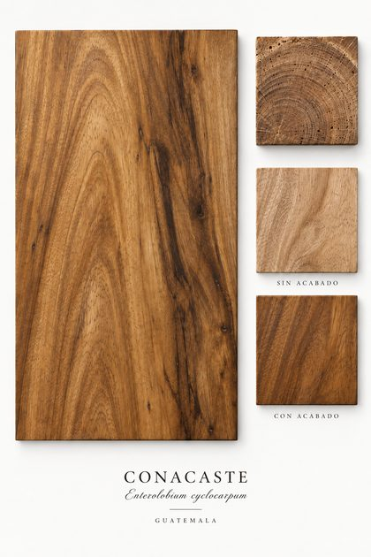
La demanda llegó al punto en que tuve que dejar de hacer cada pieza yo mismo y dejar de depender del taller de la universidad. Contraté a un carpintero, alguien que hacía muebles pero que nunca había hecho una tabla de picar, compré la madera yo mismo y se la llevé, y le expliqué paso a paso cómo hacerlas. Funcionó bien, él le agarró la onda y siguió haciéndolas con nosotros. Las tablas no eran baratas: la cantidad de madera y el trabajo que llevaba cada una significaban un precio real, y la gente lo pagaba.
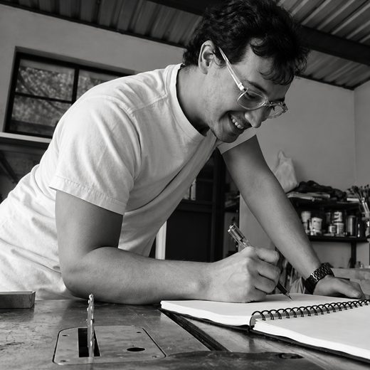
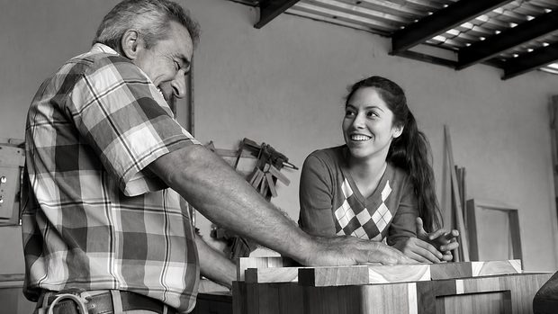
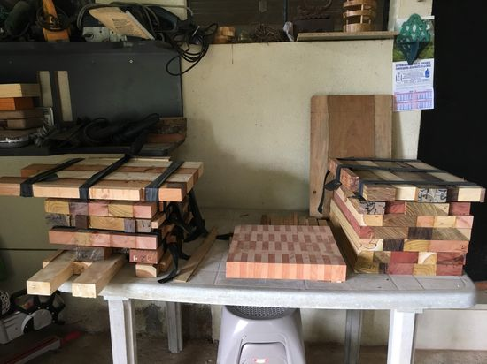
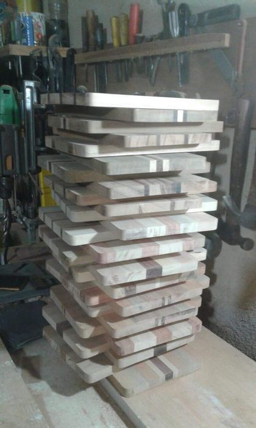
Entre dos lotes hicimos unas 40 tablas de picar, más unas 50 de las tablas de quesos más sencillas, y vendimos casi todo. Búho ya no está activo hoy, pero fue donde aprendí por primera vez lo que realmente se necesita para diseñar algo, hacerlo con calidad real, y venderlo directamente a la gente que lo quería.
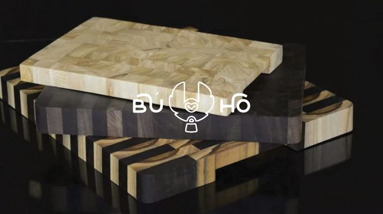
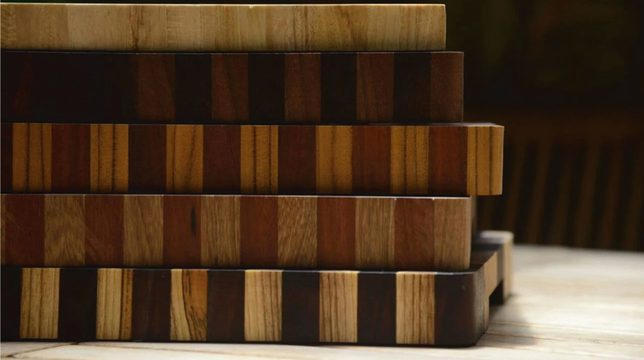
El producto vino con su propia identidad: un logotipo de texto y un símbolo de búho que diseñé juntos como un logo combinado, un logo grabado con láser directamente en cada tabla, un sello de goma usado en las bolsas y el empaque, un pequeño manual sobre cómo cuidar la tabla, además de la presencia en Instagram y Facebook que fue la que más corrió la voz.
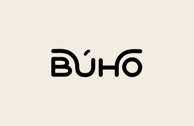
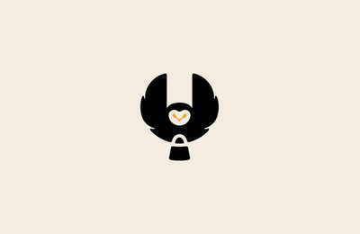
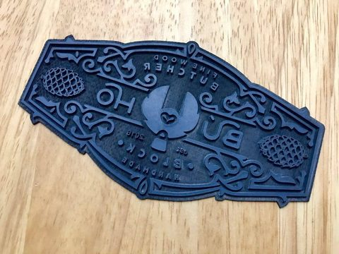
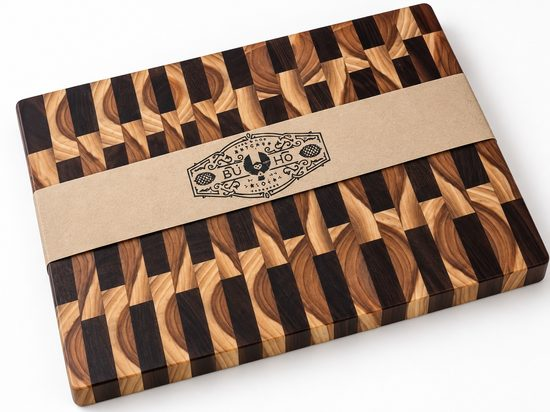
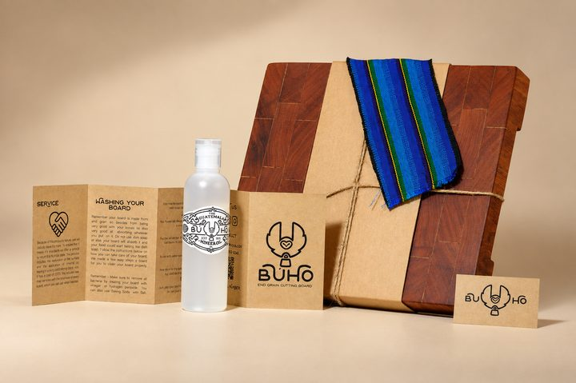
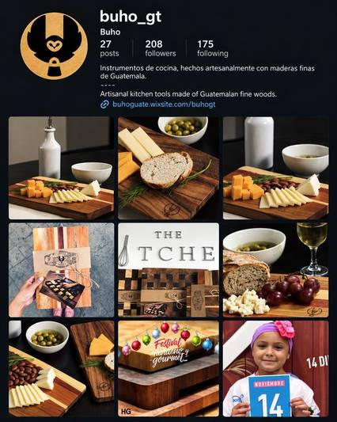
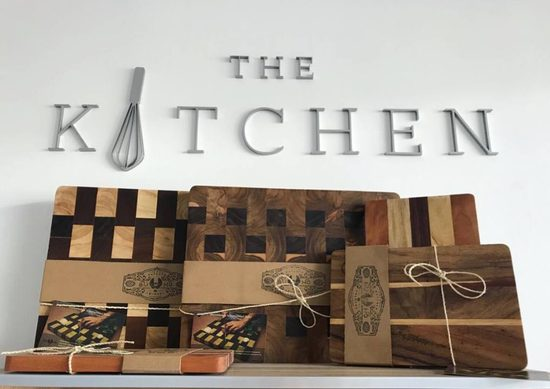
Algunas de las tablas realmente en uso, cortando, sirviendo, aguantando el trabajo diario de cocina en vez de solo quedarse como objetos de exhibición.